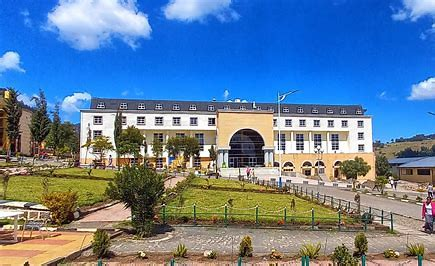
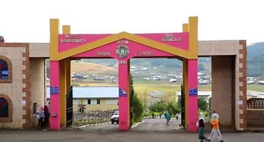

(ደሴ)(ኮምቦልቻ)(ጢጣ)
Welcome to Wollo University, located in Dessie, within the Amhara region of South Wollo, Ethiopia. Established in 2005, Wollo University stands as one of the recently founded institutions of higher learning in the country. With three campuses strategically placed across different locations, we aim to serve diverse academic and societal needs.
Our main campus in Dessie is home to a range of academic faculties and schools, including the College of Natural Sciences, College of Agriculture, College of Business and Economics, College of Social Science and Humanities, School of Veterinary Medicine, School of Law, and Institute of Teacher Education and Pedagogical Science.
In Kombolcha town, our Institute of Technology (KIOT) specializes in engineering and informatics, offering cutting-edge programs to meet the demands of modern industries and technology-driven sectors.
Additionally, our tertiary care campus, located in Tita, houses the College of Medicine and Health Sciences, dedicated to training future healthcare professionals and advancing medical research.
Driven by a vision to provide quality education and contribute to the industrial and social development of Ethiopia, Wollo University aims to become a leading institution in East Africa. With a focus on excellence in education, research, and community service, we are committed to nurturing talent, fostering innovation, and promoting sustainable development.
As part of our commitment to knowledge dissemination, we are proud to announce the upcoming launch of two online journals: Abyssinia Journal of Science and Technology (AJST) and Abyssinia Journal of Business and Social Sciences (AJBS). These platforms will serve as avenues for sharing research outputs and advancing scholarly discourse in various fields.
At Wollo University, we are dedicated to shaping the future through education, research, and community engagement. Join us as we strive towards our vision of excellence and leadership in academia and beyond.

